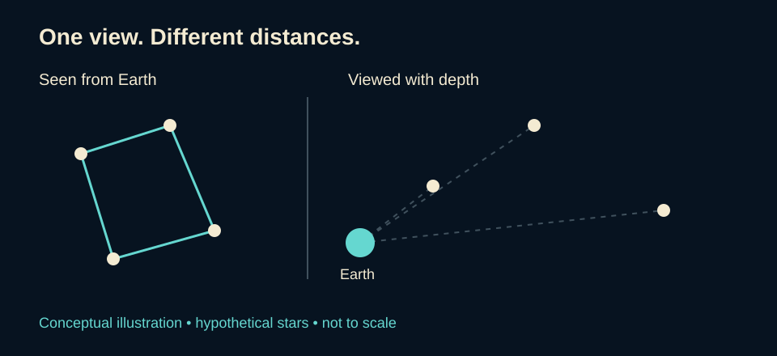

Explore and Learn · Space
From Looking Up to Reaching Beyond Earth
From the patterns in our night sky to the mathematics behind a mission, curiosity gives us a place to begin.
A sky full of questions
Look up on a clear night. Which lights are nearby, and which are unimaginably distant? What can a pattern tell us? How could anyone work out a route through space?
Space exploration connects those questions. Observation supplies evidence, mathematics helps interpret it, and engineering turns a proposed journey into equipment that can make it. We can begin understanding that connection without first becoming experts.
The sky is a viewpoint
A constellation can look like a picture, but its apparent pattern does not mean all its stars sit together at the same distance. Our view compresses depth into a scene on the sky. Cultures have given star patterns different names and meanings; no single interpretation represents every community. Modern astronomy recognizes 88 constellations. Source
This offers a useful distinction: a story gives a pattern meaning, while measurements help explain the objects that form it. Both invite curiosity, but a cultural interpretation is not itself evidence about a star’s physical properties.
Our place on Earth and the season also affect what we can see. NASA describes how the view changes as Earth travels around the Sun and how observers in different hemispheres see different portions of the sky. Source

Katherine Johnson: mathematics with a destination
NASA mathematician Katherine Johnson helped calculate the trajectory for Alan Shepard’s 1961 flight. Before John Glenn’s 1962 orbital mission, he requested that she check the electronic computer’s calculations. NASA’s biography describes her checking the equations using a mechanical calculating machine. Her expertise contributed to a much larger team effort. Source
Johnson began work at Langley in 1953 in the segregated West Area Computing section, led by Dorothy Vaughan. Her history includes both scientific achievement and the racial barriers within the institutions where that work took place. Source
A trajectory is the path an object follows. To plan one, a team needs more than a destination: where the spacecraft starts, how it moves, and when events must happen all matter. Johnson’s story makes mathematics concrete. A number can represent a position, a speed, or a moment on which a mission depends.
Her work also offers a lesson about technology: electronic computation did not remove the need for people who understood the problem and could check the result. Source
Distance without a frightening formula
A light-year measures distance, despite the word “year.” It is how far light travels in one year. Astronomers use it because ordinary distances become cumbersome on cosmic scales. Source
Here is the underlying idea in everyday terms: distance = speed × time.
An original simplified example: an object moving at a steady 10 kilometers per hour for 3 hours travels 30 kilometers. That is arithmetic with a purpose. Real spacecraft planning involves much more: this example assumes constant speed and does not model gravity, orbital motion, or changing direction.
Mathematics can begin as a way to answer a question, rather than a page of unexplained symbols.

Finding a world through a tiny change
An exoplanet is a planet outside our solar system. One way to detect one is to observe a transit: a planet passes in front of its star from our viewpoint and blocks a small part of the starlight. Instruments measure the resulting dip in brightness. Source
The discovery is often an interpretation of measurements rather than a photograph showing a planet’s surface. Mathematics helps describe how much the brightness changes. A transit also requires the right viewing alignment; a planet can exist without crossing its star’s face as seen from Earth. Source
Knowing that a planet exists does not establish that life exists there. Those are different questions, requiring different evidence.

Reaching beyond the Sun’s bubble
The Voyager spacecraft crossed the heliopause, the boundary between the Sun’s outward-flowing solar wind and the surrounding interstellar environment. Voyager 1 crossed in 2012 and Voyager 2 in 2018. These were robotic journeys into interstellar space. Source
“Interstellar space” and “outside the entire solar system” are not interchangeable descriptions. NASA explains that the Voyagers can be beyond the heliopause while still far from the solar system’s outer reaches. This distinction keeps a remarkable achievement precise rather than making it sound larger than the evidence supports. Source
Curiosity becomes a method
The route from a star pattern to a spacecraft is not one person’s story or one subject’s accomplishment. It joins observation, instruments, design, interpretation, and communication.
For readers who never liked mathematics, Katherine Johnson provides a welcoming starting point: begin with a real question. What path should we follow? What measurement would help? How can we check the answer? The mathematics then has somewhere to take us.
Explore further through the original references on our Sources & Works Cited page.